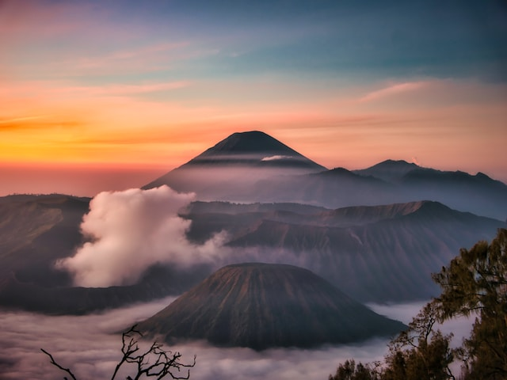
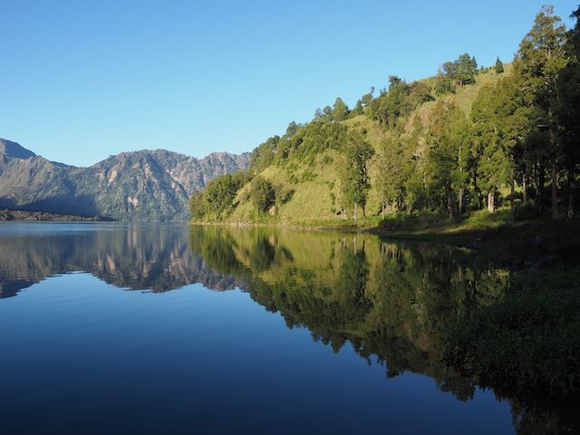
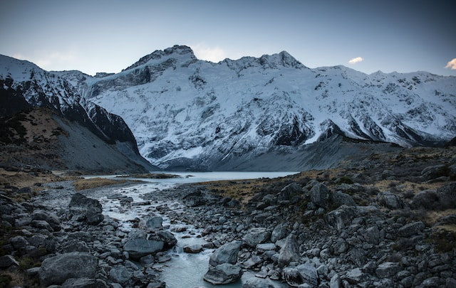

Mount Bromo
Mount Bromo is an active volcano located in East Java, Indonesia. It is part of the Bromo Tengger Semeru National Park and is a popular tourist attraction. The volcano stands at a height of 2,329 meters and offers breathtaking sunrise views.
Mount Rinjani
Mount Rinjani is an active volcano located on the island of Lombok, Indonesia. It is the second highest volcano in Indonesia, standing at a height of 3,726 meters. The volcano is known for its stunning crater lake, Segara Anak, and challenging trekking opportunities.
Mount Kerinci
Mount Kerinci is the highest volcano in Indonesia, reaching an elevation of 3,805 meters. It is located in the Kerinci Seblat National Park on the island of Sumatra. The mountain offers picturesque landscapes and is a popular destination for hiking enthusiasts.